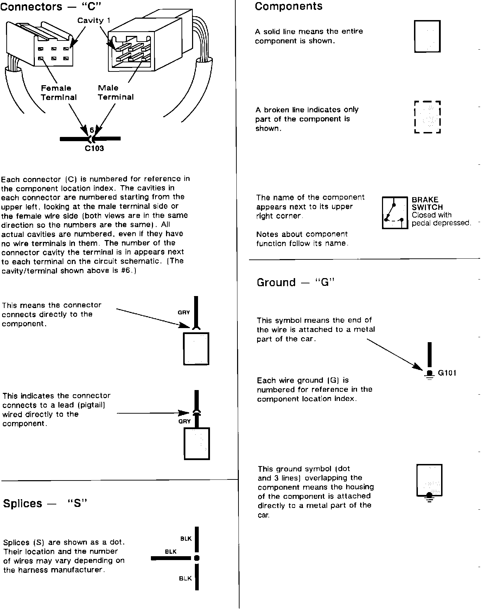
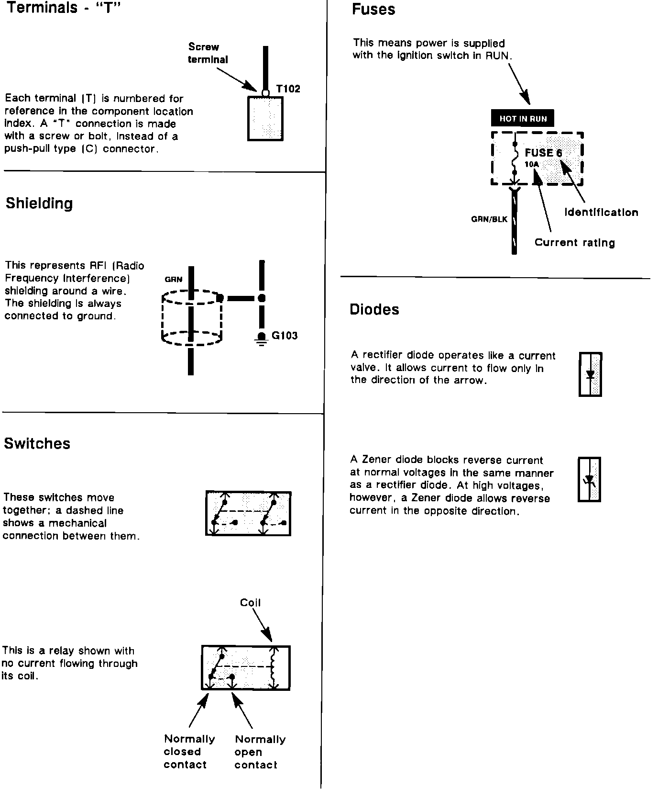

Operation CHARM
: Car repair manuals for everyone.
Home
>>
Acura
>>
1992
>>
Vigor L5-2451cc 2.5L SOHC G25A4 FI
>>
Repair and Diagnosis
>>
Instrument Panel, Gauges and Warning Indicators
>>
Seat Belt Reminder Lamp
>>
Diagrams
>>
Diagram Information and Instructions
>>
Symbol Identification
Symbol Identification
Symbol Identification:
Key To Wiring Diagrams And Symbol Identification:
Key To Wiring Diagrams And Symbol Identification:

Key To Wiring Diagrams And Symbol Identification:
